De: Para:
Cartas sobre Design
De: Para: Cartas sobre Design é um projeto de escrita em circulação que se completa pela recepção postal e leitura em formato impresso.
Através do convite a várias designers, Joana e Mariana propõem a discussão e partilha de conhecimentos, em formato carta.
O meu contributo para o projeto é uma carta dirigida à "indústria criativa", onde falo da minha experiência enquanto estudante de design e "freelancer". É uma crítica à ideologia neoliberal do "design thinking", à lógica de produtividade como geradora de valor e um apelo à construção de uma comunidade de designers mais unidas para reclamar os seus direitos de trabalho e por uma prática de design mais atenta às problemáticas interseccionais.
 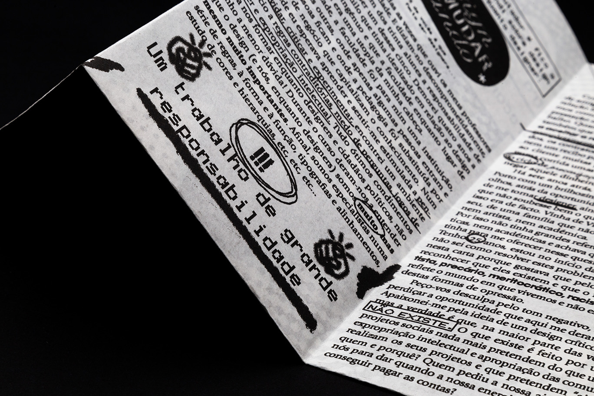
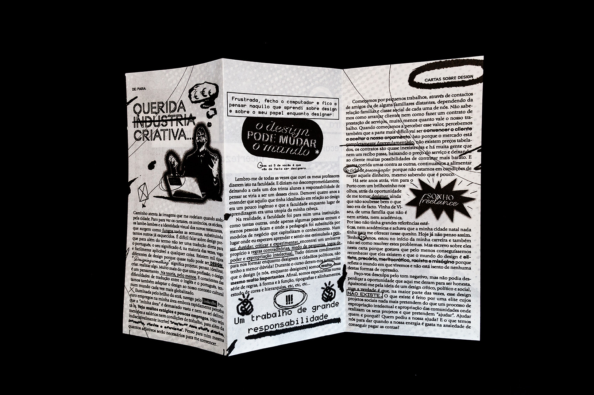
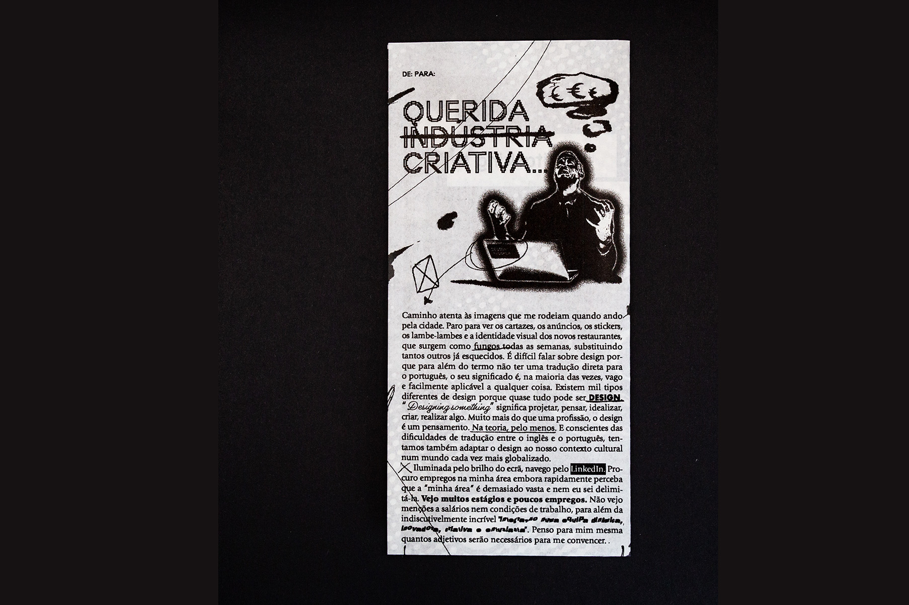
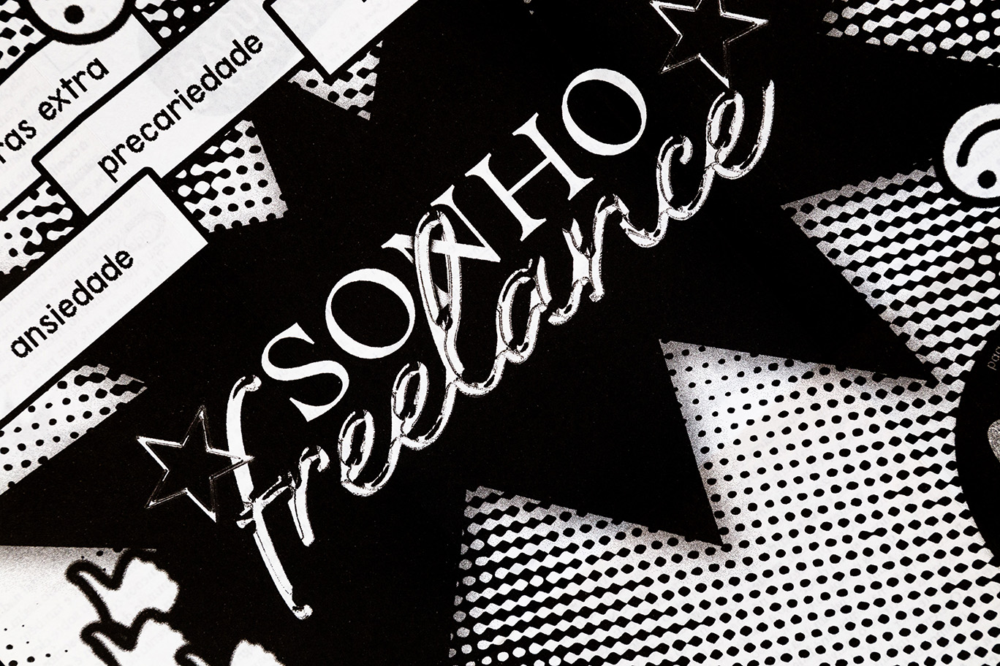
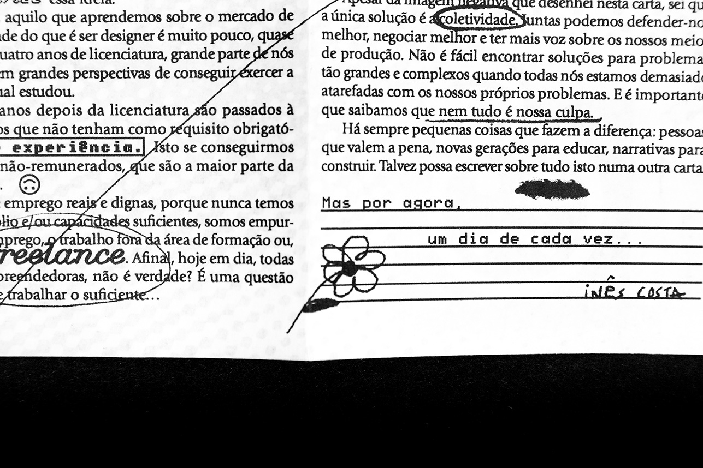
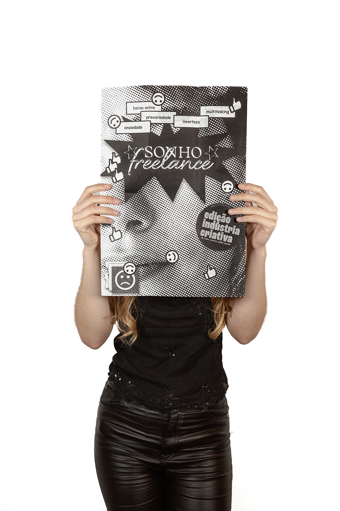
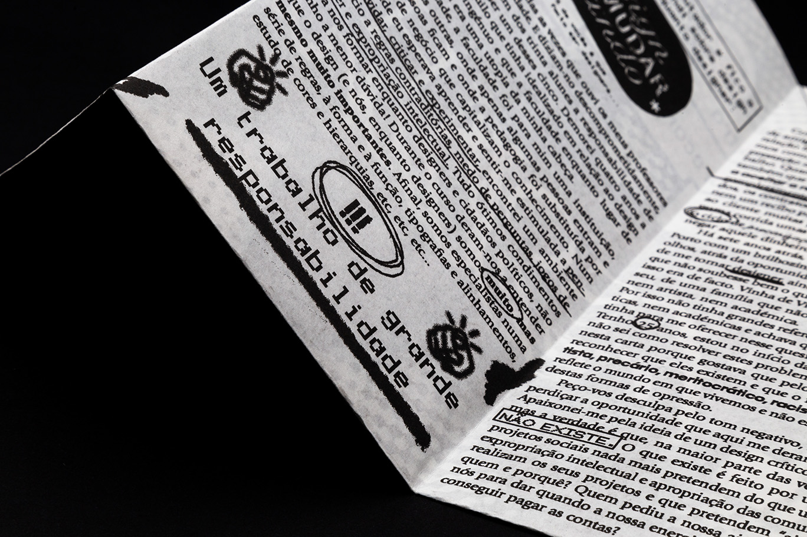
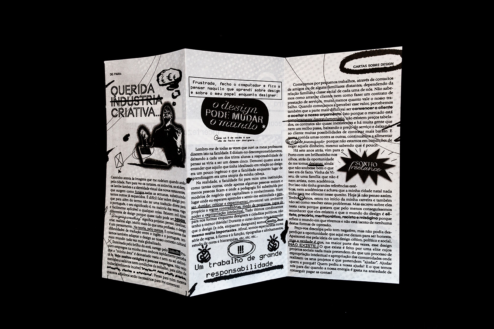
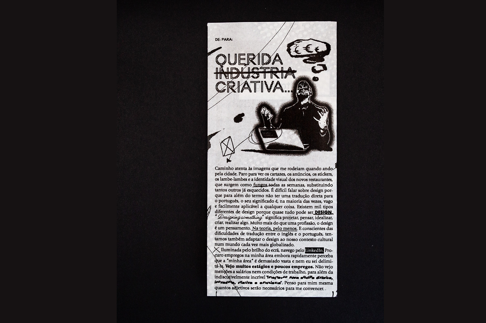
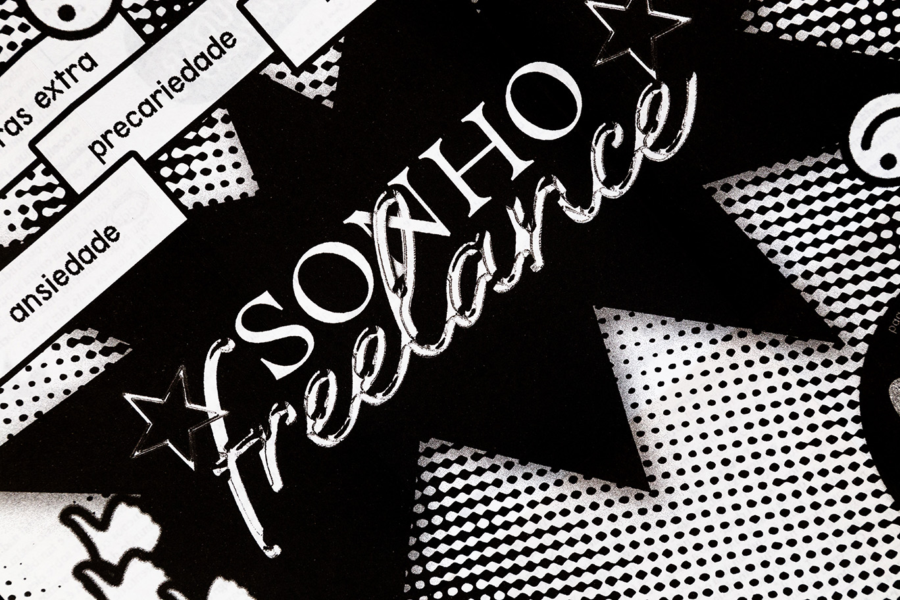
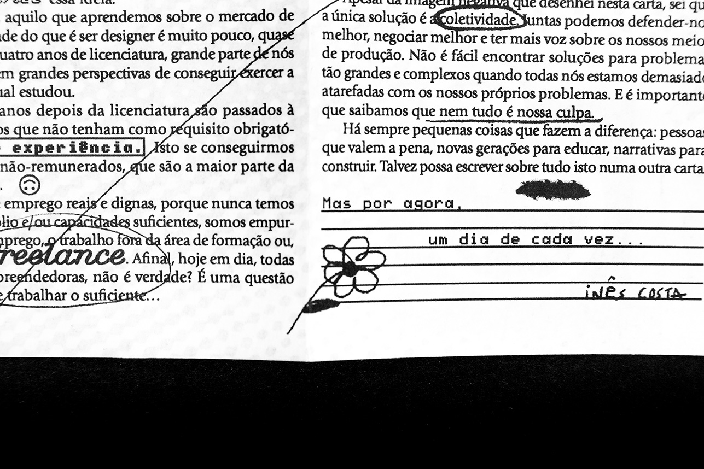
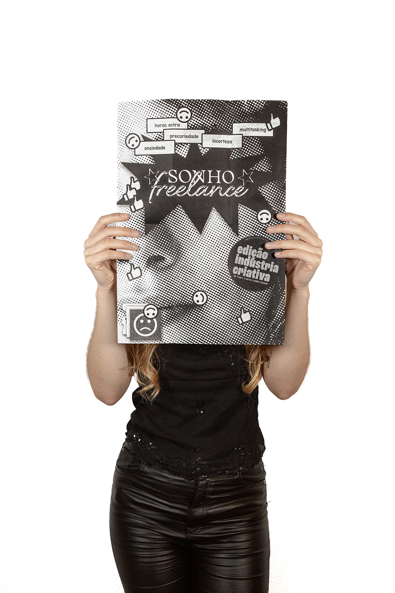